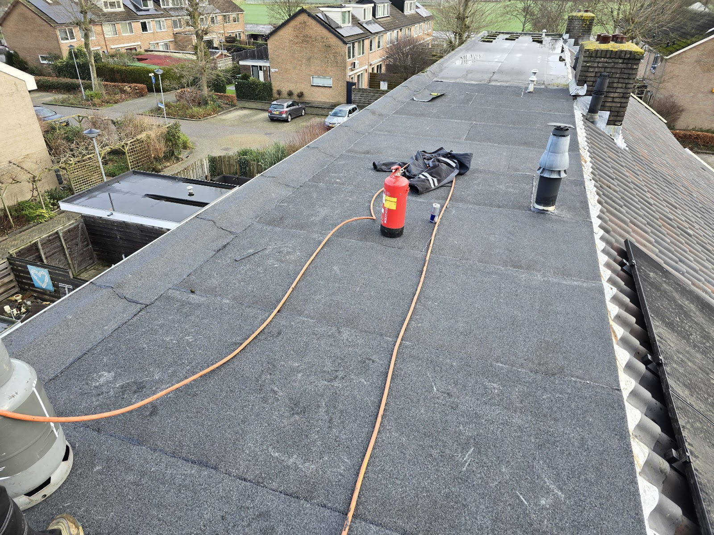
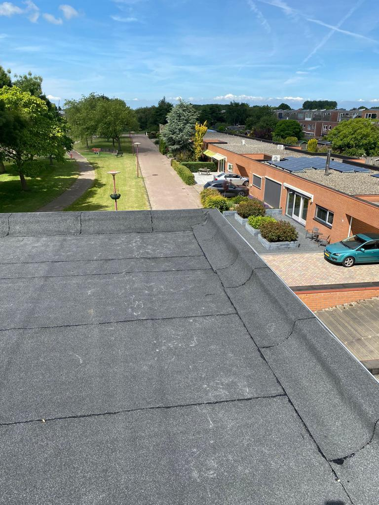
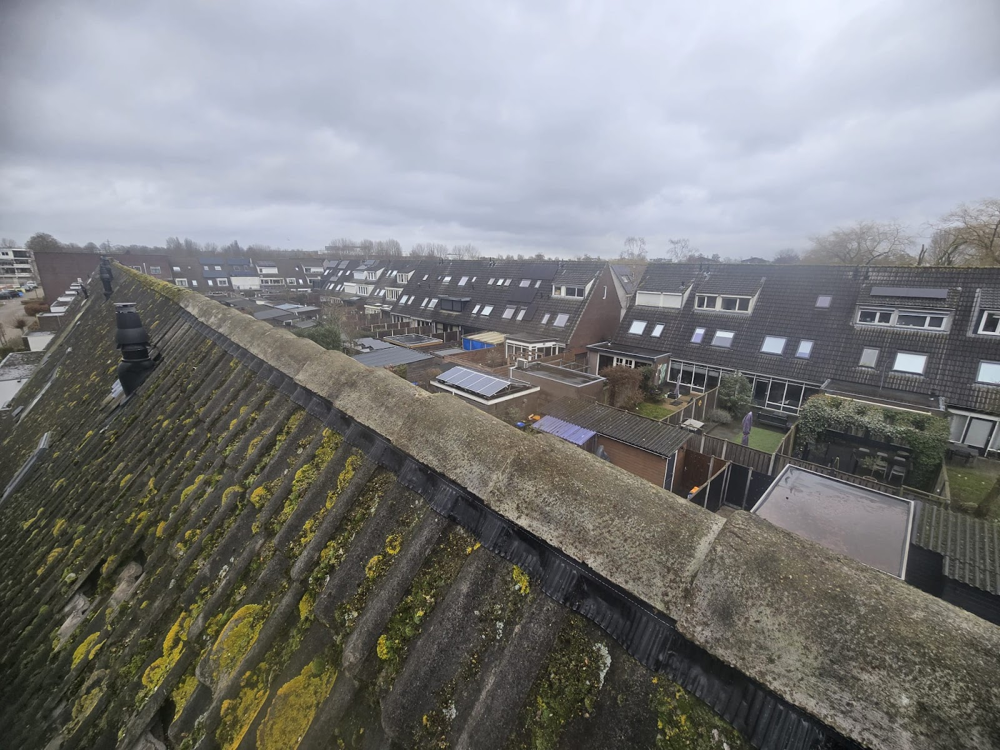
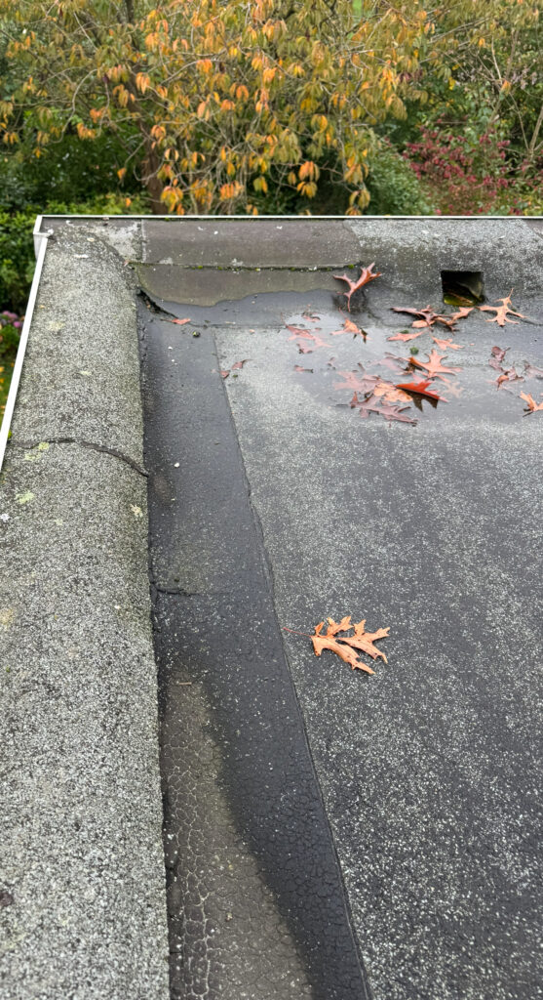
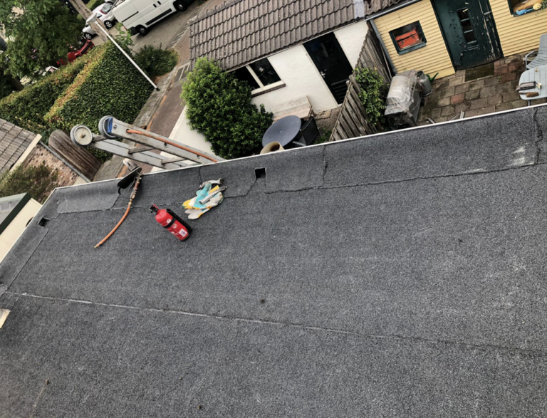

Dakdekker in Ede en Almere
Weer droog. En weer strak.
Lekkage, kapotte pannen of een plat dak dat op is? Wij zoeken de oorzaak, geven u vooraf een vaste prijs en maken het netjes af.
5,0 uit 10 Google-reviews

Lekt het nu?
Bel ons, ook 's nachts en op zondag. Bij acute lekkage dichten we eerst tijdelijk af, daarna volgt de definitieve reparatie. U hoort vooraf wat allebei kost.
06 26 01 02 0324 uur per dag, 7 dagen per week
Wat u zelf kunt doen, tot wij er zijn
-
1
Ga niet zelf het dak op
Zeker niet bij regen, wind of in het donker.
-
2
Vang het water op
Emmers of bakken eronder, handdoeken op de vloer.
-
3
Stroom uit, spullen weg
Zet elektra in de buurt van het water uit.
-
4
Maak foto's
Van de schade binnen, en het dak alleen vanaf de grond.
-
5
Bel of app ons
We bespreken direct wat er nodig is. Stuur de foto's gerust mee.
Platte daken zijn ons vak
Aanbouwen, garages, dakkapellen en complete woningen met een plat dak: daar zit een groot deel van ons werk. We leggen meestal bitumen in twee lagen, gebrand of gekleefd. Bewezen, onderhoudsarm en bij goede aanleg gaat het tientallen jaren mee.
- Lekkage opsporen en herstellen
- Nieuwe dakbedekking op de bestaande ondergrond
- Complete renovatie, inclusief isolatie
- Dakranden, afvoeren en aansluitingen waterdicht


Pannendak lek of beschadigd?
Bij een pannendak zit het probleem bijna altijd in de details: een verschoven pan, een losse nokvorst, versleten lood bij de schoorsteen of een verstopte kilgoot. We herstellen dat, en kijken meteen naar de folie en panlatten eronder.
- Kapotte of verschoven dakpannen
- Nokvorsten en gevelpannen
- Lood bij schoorsteen, dakkapel en dakraam
- Compleet dak vervangen, met isolatie
Repareren of vervangen? Is het een losse beschadiging op een verder gezond dak, dan repareren we. Zien we meer, dan bespreken we eerlijk wat op termijn voordeliger is.
Van één pan tot een heel nieuw dak
Niet zeker wat u nodig heeft? Bel of app een korte omschrijving of foto's. We adviseren eerlijk wat nodig is.

- Daklekkage
- We sporen de oorzaak op en verhelpen die, niet alleen het symptoom.
- Spoed en stormschade
- Weggewaaide pannen of losgeslagen dakbedekking: zo snel mogelijk noodherstel.
- Dakkapel
- Lekkage bij de dakkapel verhelpen en nieuwe dakbedekking erop.
- Schoorsteen
- Los voegwerk of loodslabben herstellen en waterdicht aansluiten.
- Dakgoten, zink en lood
- Lekkende of verstopte goten en regenpijpen repareren of vervangen.
- Dakisolatie
- Platte en hellende daken isoleren, voor een warmer huis.
- Inspectie en onderhoud
- Goten, afvoeren, naden en aansluitingen schoon en dicht, met helder advies.
- VvE's en bedrijven
- Dakrapport, meerjarenonderhoudsplan en onderhoud.
Wat klanten zeggen
5,0 uit 10 reviews op Google
"Ik belde dakdekker online toen ik lekkage had aan mij dak... Dakdekker online kon snel langs komen om te kijken naar de lekkage. Na een duidelijke uitleg over wat er moest gebeuren kregen we een offerte. De prijs was goed dus mochten het komen maken. Dak gemaakt geen lekkages meer en het ziet er weer strak uit! Thanks"
"Dakdekker Online heeft ons platdak van ons woonhuis vervangen met bitumen! Ik ben zeer tevreden over dit bedrijf en raad het zeker aan. Het contact was zeer prettig en vlot! Werknemers waren netjes en werken hard door! Mvg Fam glas"
"Na een lekkage heel snel geholpen en prettig contant gehad via whatsapp. Volgende dag is het meteen opgelost en netjes overal foto's van gemaakt. Duidelijke uitleg waardoor we het goed begrepen. Zeker een aanrader!!"
"Wij zijn ontzettend tevreden over Dakdekker Online! Vanaf het eerste contact tot de oplevering van het nieuwe dak verliep alles perfect. Ze kwamen hun afspraken netjes na, werkten snel en netjes, en gaven duidelijke uitleg over de werkzaamheden. Ook de prijs was eerlijk en transparant. We raden dakdekker online zeker a..."
"Ik ben ontzettend tevreden over de service van deze dakdekker! Vanaf het eerste contact verliep alles soepel en professioneel. De communicatie was duidelijk, afspraken werden netjes nagekomen en het werk is echt vakwerk. Mijn daklekkage was snel opgespoord en vakkundig verholpen. Alles werd netjes achtergelaten na aflo..."
Eerst duidelijkheid, dan pas aan het werk

-
1
Contact
Bel, app of vul het formulier in. Bij lekkage helpt het als u foto's meestuurt.
-
2
Inspectie
We komen langs, bekijken het dak en zoeken de oorzaak van het probleem, niet alleen het gevolg.
-
3
Vaste prijs
U krijgt een duidelijke offerte: wat we doen, met welke materialen en wat het kost. Geen verrassingen achteraf.
-
4
Uitvoering
We voeren het werk vakkundig uit, ruimen netjes op en u krijgt 10 jaar garantie. Wat die dekt, staat vooraf in de offerte.
- Veilig werken op hoogte doen we volgens vaste regels: we zijn VCA-gecertificeerd.
Twee regio's, één vaste dakdekker
We werken in een groot gebied rond Ede en rond Almere. Zo zijn we snel ter plaatse, ook bij spoed.
Regio Ede
Ede, Bennekom, Lunteren, Wageningen, Veenendaal, Barneveld, Arnhem, Renkum, Rhenen, Oosterbeek, de Betuwe, Amersfoort en omgeving. En de kleinere kernen: Ederveen, De Klomp, Otterlo, Harskamp en Wekerom.
Regio Almere
Alle stadsdelen van Almere, Lelystad, Zeewolde, Huizen, Bussum, Hilversum, Weesp, Diemen, Amsterdam-Oost en Waterland.
Even kijken naar uw dak?
Bel of app ons, of laat via het formulier uw gegevens achter. Vrijblijvend. Bij spoed: altijd bellen.
Bel 06 26 01 02 03- Telefoon, 24/7
- 06 26 01 02 03
- Stuur een bericht met foto's
- info@dakdekkeronline.nl
- Kantoor regio Ede
- Galvanistraat 1, 6716 AE Ede
Geen balie of showroom: we werken bij u op locatie.